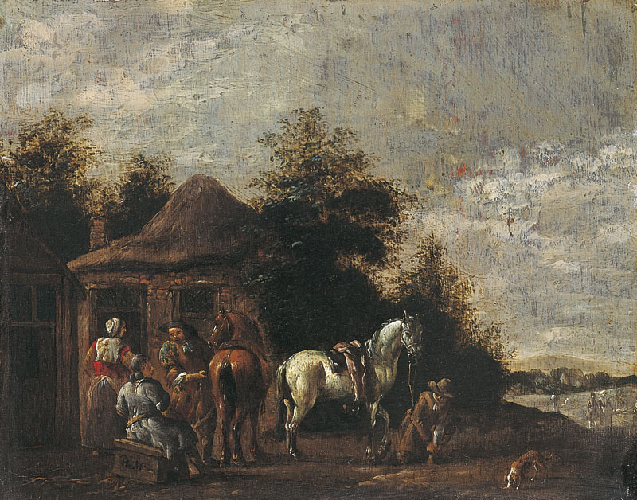

| Acceuil | Les Oeuvres par l'Auteur | Site de la Musée |
|  |
Savez-vous ?Peinture à l'huile sur tableau, et monogrammé par l'auteur en bas à gauche. Créée entre 1601 et 1700. 18 x 22.6 cm de taille. Donnée à la Musée par M. Pierre Maury par legacy en 1892. Elle était anciennement attribuée à Philips Wouwerman. |